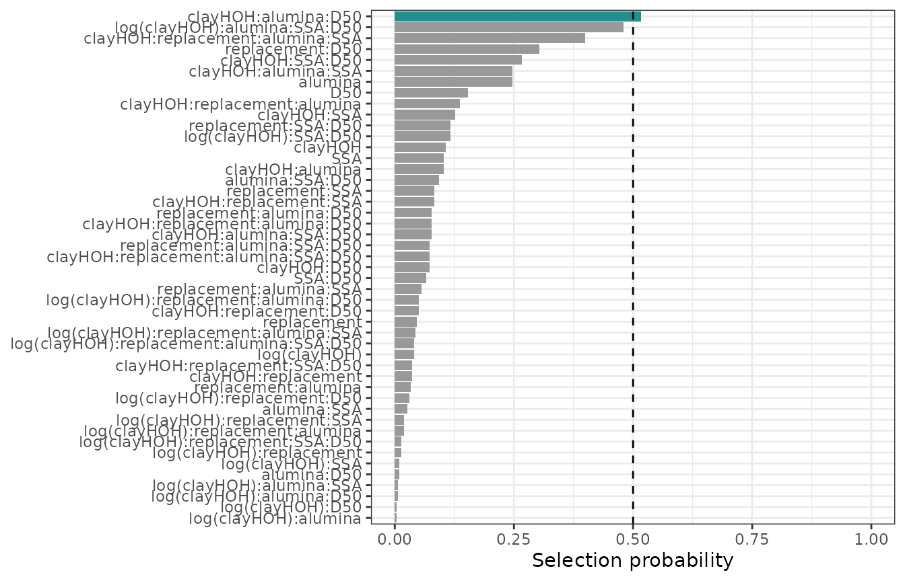
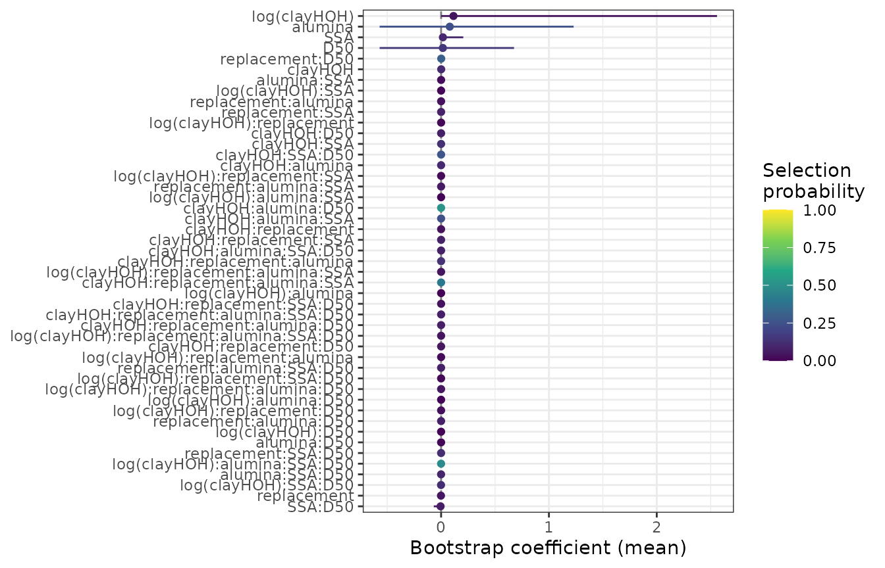
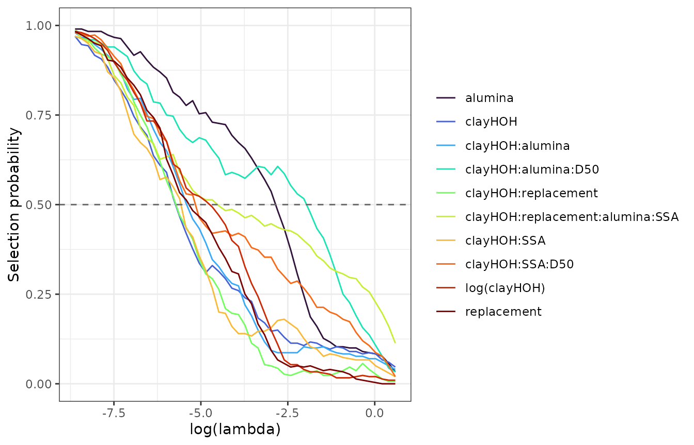
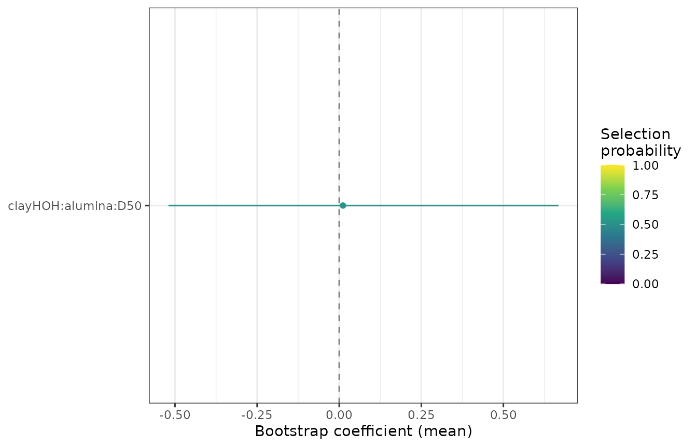
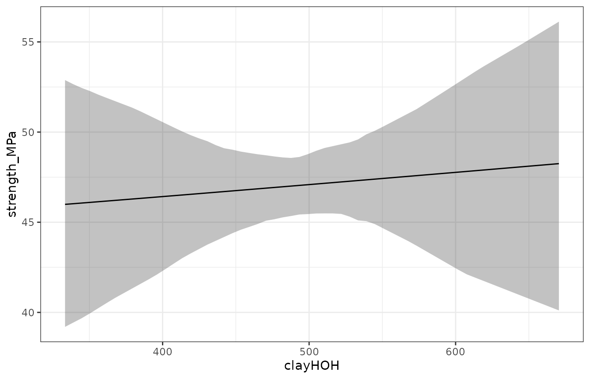
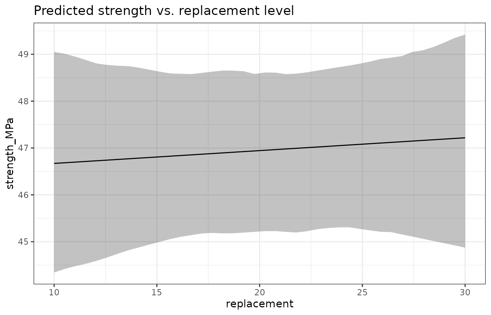
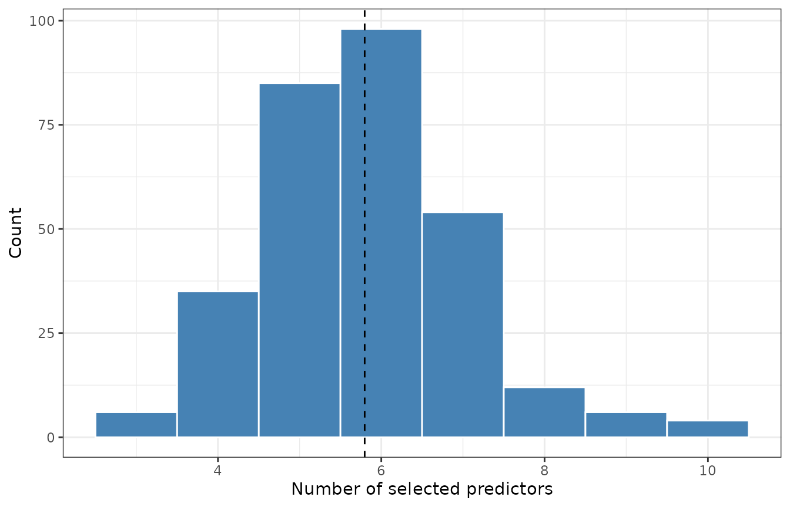

Interpreting Bootstrap Lasso Results
Source:vignettes/interpreting-results.Rmd
interpreting-results.Rmd
library(lassoboot)
library(dplyr)
#>
#> Attaching package: 'dplyr'
#> The following objects are masked from 'package:stats':
#>
#> filter, lag
#> The following objects are masked from 'package:base':
#>
#> intersect, setdiff, setequal, unionUpgrading from v0.1? Column names in
tidy()output changed in v0.2.0:estimate→mean,conf.low/conf.high→q025/q975,std.error→sd. Theconf.levelargument is nowprobs = c(0.025, 0.975). Uselb_filter_stable()instead oflb_is_significant(). Seevignette("migration-to-v020")for the full API rename table, andvignette("methodological-foundations")for the v0.2.0 conceptual framing.
Building the concrete dataset model
We will work through a complete example using the bundled
concrete dataset — 75 mortar cube strength measurements
from five calcined clay cement (LC3) blends at three ages.
spec <- suppressMessages(
lb_spec(
strength_MPa ~ (clayHOH + log(clayHOH)) * replacement * alumina * SSA * D50,
data = concrete,
uncertainty = uncertainty_concrete,
folds = lb_folds_grouped("mixture")
)
)The folds = lb_folds_grouped("mixture") argument ensures
that all age measurements for a given mixture are assigned to the same
cross-validation fold — preventing mixture identity from leaking across
train/test splits.
boot <- withr::with_seed(2025, lb_bootstrap(spec, B = 300))
#> Warning: from glmnet C++ code (error code -49); Convergence for 49th lambda
#> value not reached after maxit=100000 iterations; solutions for larger lambdas
#> returned
#> Warning: from glmnet C++ code (error code -47); Convergence for 47th lambda
#> value not reached after maxit=100000 iterations; solutions for larger lambdas
#> returned
#> Warning: from glmnet C++ code (error code -49); Convergence for 49th lambda
#> value not reached after maxit=100000 iterations; solutions for larger lambdas
#> returned
#> Warning: from glmnet C++ code (error code -49); Convergence for 49th lambda
#> value not reached after maxit=100000 iterations; solutions for larger lambdas
#> returned
#> Warning: from glmnet C++ code (error code -47); Convergence for 47th lambda
#> value not reached after maxit=100000 iterations; solutions for larger lambdas
#> returned
#> Warning: from glmnet C++ code (error code -45); Convergence for 45th lambda
#> value not reached after maxit=100000 iterations; solutions for larger lambdas
#> returned
#> Warning: from glmnet C++ code (error code -49); Convergence for 49th lambda
#> value not reached after maxit=100000 iterations; solutions for larger lambdas
#> returned
#> Warning: from glmnet C++ code (error code -47); Convergence for 47th lambda
#> value not reached after maxit=100000 iterations; solutions for larger lambdas
#> returned
#> Warning: from glmnet C++ code (error code -49); Convergence for 49th lambda
#> value not reached after maxit=100000 iterations; solutions for larger lambdas
#> returned
#> Warning: from glmnet C++ code (error code -49); Convergence for 49th lambda
#> value not reached after maxit=100000 iterations; solutions for larger lambdas
#> returned
#> Warning: from glmnet C++ code (error code -48); Convergence for 48th lambda
#> value not reached after maxit=100000 iterations; solutions for larger lambdas
#> returned
#> Warning: from glmnet C++ code (error code -47); Convergence for 47th lambda
#> value not reached after maxit=100000 iterations; solutions for larger lambdas
#> returned
#> Warning: from glmnet C++ code (error code -50); Convergence for 50th lambda
#> value not reached after maxit=100000 iterations; solutions for larger lambdas
#> returned
#> Warning: from glmnet C++ code (error code -44); Convergence for 44th lambda
#> value not reached after maxit=100000 iterations; solutions for larger lambdas
#> returned
#> Warning: from glmnet C++ code (error code -45); Convergence for 45th lambda
#> value not reached after maxit=100000 iterations; solutions for larger lambdas
#> returned
#> Warning: from glmnet C++ code (error code -43); Convergence for 43th lambda
#> value not reached after maxit=100000 iterations; solutions for larger lambdas
#> returned
#> Warning: from glmnet C++ code (error code -47); Convergence for 47th lambda
#> value not reached after maxit=100000 iterations; solutions for larger lambdas
#> returned
#> Warning: from glmnet C++ code (error code -46); Convergence for 46th lambda
#> value not reached after maxit=100000 iterations; solutions for larger lambdas
#> returned
#> Warning: from glmnet C++ code (error code -44); Convergence for 44th lambda
#> value not reached after maxit=100000 iterations; solutions for larger lambdas
#> returned
#> Warning: from glmnet C++ code (error code -48); Convergence for 48th lambda
#> value not reached after maxit=100000 iterations; solutions for larger lambdas
#> returned
#> Warning: from glmnet C++ code (error code -50); Convergence for 50th lambda
#> value not reached after maxit=100000 iterations; solutions for larger lambdas
#> returnedThree complementary significance criteria
tidy() returns one row per predictor with estimates,
confidence intervals, and three complementary diagnostics:
td <- tidy(boot)
select(td, term, mean, q025, q975, selection_prob, stability_score) |>
arrange(desc(selection_prob))
#> # A tibble: 47 × 6
#> term mean q025 q975 selection_prob stability_score
#> <chr> <dbl> <dbl> <dbl> <dbl> <dbl>
#> 1 clayHOH:alumina:D50 3.85e-6 -1.75e-4 2.25e-4 0.517 0.987
#> 2 log(clayHOH):alumin… -1.38e-4 -1.13e-3 4.43e-4 0.48 0.967
#> 3 clayHOH:replacement… 8.71e-8 -5.45e-8 6.18e-7 0.4 0.987
#> 4 replacement:D50 1.14e-3 -2.33e-2 3.15e-2 0.303 0.957
#> 5 clayHOH:SSA:D50 1.74e-5 -1.16e-4 2.42e-4 0.267 0.98
#> 6 alumina 8.02e-2 -5.70e-1 1.23e+0 0.247 0.99
#> 7 clayHOH:alumina:SSA 2.14e-6 0 1.73e-5 0.247 0.967
#> 8 D50 1.63e-2 -5.70e-1 6.76e-1 0.153 0.95
#> 9 clayHOH:replacement… 1.84e-7 -1.80e-6 6.42e-6 0.137 0.97
#> 10 clayHOH:SSA 2.45e-5 0 2.96e-4 0.127 0.97
#> # ℹ 37 more rows1. Selection probability
autoplot(boot, type = "selection", threshold = 0.5)
Selection probability is the fraction of bootstrap
iterations in which a predictor had a nonzero coefficient at
lambda.min. It answers: over repeated perturbations of
the data, how often does lasso choose this predictor?
A threshold of 0.5 (“majority selection”) is a reasonable starting
point for exploratory analysis. Use lb_is_significant() to
filter:
td |> filter(lb_is_significant(pick(everything()), method = "selection", threshold = 0.5))
#> Warning: There was 1 warning in `filter()`.
#> ℹ In argument: `lb_is_significant(pick(everything()), method = "selection",
#> threshold = 0.5)`.
#> Caused by warning:
#> ! `lb_is_significant()` is deprecated.
#> ℹ Use `lb_filter_stable()` with named arguments instead:
#> ℹ `lb_filter_stable(td, min_selection_prob = 0.5)`
#> ℹ `lb_filter_stable(td, min_stability_score = 0.8)`
#> ℹ `lb_filter_stable(td, quantiles_exclude_zero = TRUE)`
#> # A tibble: 1 × 9
#> term mean median sd q025 q975 selection_prob n_selected
#> <chr> <dbl> <dbl> <dbl> <dbl> <dbl> <dbl> <int>
#> 1 clayHOH:alu… 3.85e-6 0 9.57e-5 -1.75e-4 2.25e-4 0.517 155
#> # ℹ 1 more variable: stability_score <dbl>2. CI exclusion of zero
autoplot(boot)
Bootstrap CIs that exclude zero are a supplementary indicator — a predictor can have a CI excluding zero but a low selection probability if it is selected inconsistently (see the correlated-predictor section below). CIs should be paired with selection probability, not used alone.
td |> filter(lb_is_significant(pick(everything()), method = "ci"))
#> # A tibble: 0 × 9
#> # ℹ 9 variables: term <chr>, mean <dbl>, median <dbl>, sd <dbl>, q025 <dbl>,
#> # q975 <dbl>, selection_prob <dbl>, n_selected <int>, stability_score <dbl>3. Stability score
autoplot(boot, type = "stability", top_n = 10)
Stability score is the maximum selection probability across the full regularization path. A predictor with a high stability score is selected consistently regardless of the specific lambda value chosen — it is robust to the arbitrary choice of regularization strength.
Stability is the most conservative criterion. For confirmatory claims
in a publication, require stability_score > 0.8.
td |> filter(lb_is_significant(pick(everything()), method = "stability", threshold = 0.8))
#> # A tibble: 47 × 9
#> term mean median sd q025 q975 selection_prob n_selected
#> <chr> <dbl> <dbl> <dbl> <dbl> <dbl> <dbl> <int>
#> 1 clayHOH 8.87e-4 0 3.84e-3 0 1.40e-2 0.107 32
#> 2 log(clayH… 1.15e-1 0 8.39e-1 0 2.56e+0 0.04 12
#> 3 replaceme… -1.29e-3 0 2.44e-2 -0.00328 0 0.0467 14
#> 4 alumina 8.02e-2 0 4.24e-1 -0.570 1.23e+0 0.247 74
#> 5 SSA 1.66e-2 0 8.15e-2 0 2.06e-1 0.103 31
#> 6 D50 1.63e-2 0 2.59e-1 -0.570 6.76e-1 0.153 46
#> 7 clayHOH:r… 4.95e-7 0 3.29e-5 0 0 0.0367 11
#> 8 log(clayH… 3.72e-5 0 5.18e-4 0 0 0.0133 4
#> 9 clayHOH:a… 1.70e-5 0 6.80e-5 0 2.32e-4 0.103 31
#> 10 log(clayH… 4.30e-8 0 7.45e-7 0 0 0.00333 1
#> # ℹ 37 more rows
#> # ℹ 1 more variable: stability_score <dbl>Gelman 2-SD scaling for comparing effect sizes
Raw lasso coefficients are in the original units of each predictor
and cannot be compared directly when predictors have different scales
(SSA in m²/g vs. replacement in %). The scale = "gelman"
option in tidy() multiplies each coefficient by
2 * sd(predictor), placing all numeric predictors on a
“2-standard-deviation change” scale (Gelman 2008):
tidy(boot, scale = "gelman") |>
select(term, mean, q025, q975, selection_prob) |>
arrange(desc(abs(mean)))
#> # A tibble: 47 × 5
#> term mean q025 q975 selection_prob
#> <chr> <dbl> <dbl> <dbl> <dbl>
#> 1 alumina 0.276 -1.96 4.22 0.247
#> 2 clayHOH 0.204 0 3.22 0.107
#> 3 SSA:D50 -0.140 -1.98 0 0.0667
#> 4 SSA 0.129 0 1.60 0.103
#> 5 clayHOH:SSA:D50 0.117 -0.776 1.62 0.267
#> 6 log(clayHOH) 0.115 0 2.56 0.04
#> 7 D50 0.0612 -2.14 2.54 0.153
#> 8 replacement:D50 0.0608 -1.25 1.69 0.303
#> 9 replacement:SSA:D50 -0.0549 -0.834 0 0.117
#> 10 clayHOH:SSA 0.0437 0 0.529 0.127
#> # ℹ 37 more rowsA coefficient of 0.15 on this scale means: changing the predictor from its mean to one SD above its mean changes the predicted response by about 0.075 units (half of the 2-SD effect). This allows direct comparison of clayHOH (range ~330–670 J/g) with replacement (range 10–30 %) on the same axis.
autoplot(boot, scale = "gelman", filter = "selected")
Correlated predictors
Lasso tends to select one variable from a group of correlated
predictors arbitrarily. lb_correlated_pairs() identifies
pairs where:
- Correlation in the original data exceeds
cor_threshold. - Neither predictor alone has a high selection probability.
- The joint “either is selected” probability is high.
pairs <- lb_correlated_pairs(boot, cor_threshold = 0.7, prob_threshold = 0.5)
pairs
#> # A tibble: 20 × 6
#> term_1 term_2 correlation prob_1 prob_2 prob_either
#> <chr> <chr> <dbl> <dbl> <dbl> <dbl>
#> 1 clayHOH log(cl… -0.931 0.107 0.48 0.527
#> 2 log(clayHOH) log(cl… -0.922 0.04 0.48 0.513
#> 3 alumina clayHO… 0.747 0.247 0.4 0.557
#> 4 alumina log(cl… -0.900 0.247 0.48 0.637
#> 5 SSA log(cl… -0.916 0.103 0.48 0.55
#> 6 D50 log(cl… 0.861 0.153 0.48 0.54
#> 7 clayHOH:alumina log(cl… -0.932 0.103 0.48 0.53
#> 8 clayHOH:SSA log(cl… -0.935 0.127 0.48 0.547
#> 9 clayHOH:D50 log(cl… 0.854 0.0733 0.48 0.513
#> 10 SSA:D50 log(cl… 0.952 0.0667 0.48 0.547
#> 11 clayHOH:replacement:alumina clayHO… 0.963 0.137 0.4 0.517
#> 12 clayHOH:replacement:SSA log(cl… -0.705 0.0833 0.48 0.53
#> 13 clayHOH:alumina:SSA clayHO… 0.774 0.247 0.4 0.533
#> 14 clayHOH:alumina:SSA log(cl… -0.935 0.247 0.48 0.567
#> 15 clayHOH:SSA:D50 clayHO… 0.760 0.267 0.4 0.54
#> 16 clayHOH:SSA:D50 log(cl… -0.863 0.267 0.48 0.67
#> 17 log(clayHOH):SSA:D50 log(cl… 0.968 0.117 0.48 0.58
#> 18 alumina:SSA:D50 log(cl… 0.981 0.0933 0.48 0.547
#> 19 clayHOH:replacement:alumina:SSA log(cl… -0.726 0.4 0.48 0.69
#> 20 clayHOH:alumina:SSA:D50 log(cl… -0.884 0.0767 0.48 0.547If any pairs are flagged, the appropriate action depends on domain knowledge: - If the two predictors measure the same underlying phenomenon, prefer the one with lower measurement uncertainty. - If they measure distinct aspects, consider including both and noting the instability in your write-up. - The stability score is particularly useful here: if only one of a correlated pair has a high stability score, that one is the more robust choice.
Prediction grids: lb_grid() and
lb_plot_prediction()
lb_plot_prediction() wraps lb_grid() to
produce a ribbon plot of .fitted ± CI vs. a focal
predictor, with all other predictors held at their median:
lb_plot_prediction(boot, focal = "clayHOH", n = 60)
lb_plot_prediction(boot, focal = "replacement", n = 40) +
ggplot2::labs(title = "Predicted strength vs. replacement level")
The at = "median" default (holding non-focal predictors
at their observed median) is appropriate for a marginal effect plot. For
per-combination ribbons (showing one ribbon per unique clay × age
combination), call lb_grid() directly with
at = "observed" and build the ggplot manually:
grid <- lb_grid(boot, focal = "clayHOH", n = 60, at = "observed")
# grid has one predicted row per (clayHOH value × observed combination)Extrapolation warning. lb_grid() clips
grid values to the observed range by default. Pass
extrapolate = TRUE to extend beyond the data; mark any
extrapolated region clearly in the final plot.
Confidence bands vs. prediction bands
lb_grid() and lb_plot_prediction() support
two types of uncertainty interval for the fitted response, selected with
the interval argument.
Confidence band
(interval = "confidence", the default): captures
uncertainty in the mean response — how precisely the regression
surface is estimated from the data. It reflects only variability in the
bootstrap coefficient estimates. Confidence bands narrow as n
grows and the model becomes better determined, but they do
not account for the scatter of individual observations
around the trend.
Prediction band
(interval = "prediction"): answers the question where
will a new individual measurement fall? It adds the residual
scatter σ̂ (estimated inside lb_bootstrap()) on top
of the confidence envelope. A new observation drawn from the same
process will fall outside the prediction band only with probability
equal to the nominal level — regardless of sample size.
# Confidence band: uncertainty in the mean trend
lb_plot_prediction(boot, focal = "clayHOH", n = 60, interval = "confidence")
# Prediction band: where a new data point will fall
lb_plot_prediction(boot, focal = "clayHOH", n = 60, interval = "prediction")The additional width of the prediction band over the confidence band
is approximately σ̂ × √(1 + 1/n) at the median predictor
values. When the model is well-determined (large n, high
selection probability) but has genuine residual scatter
(e.g. between-batch variation in cement production), prediction bands
can be substantially wider than confidence bands. That difference is the
honest answer to “how repeatable is a new test?”
lb_plot_envelopes() (new in v0.2.0) plots both
simultaneously: a wider, lower-opacity prediction ribbon behind a
narrower confidence ribbon. Use interval = "both" to
activate this overlay:
lb_plot_envelopes(boot, focal = "clayHOH", interval = "both", n = 60)Practical guidance:
| Plotting goal | Recommended interval |
|---|---|
| “How well do we know the mean trend?” | "confidence" |
| “Where will a new measurement fall?” | "prediction" |
| Communicate both to a broad audience |
"both" in lb_plot_envelopes()
|
Nested cross-validation: lb_folds_nested()
When the data has a nested structure — multiple replicates per
mixture, each mixture at multiple ages — a plain k-fold CV can leak
mixture identity into the test fold. Use lb_folds_nested()
to prevent this:
spec_nested <- suppressMessages(
lb_spec(
strength_MPa ~ (clayHOH + log(clayHOH)) * replacement * alumina,
data = concrete,
uncertainty = uncertainty_concrete,
folds = lb_folds_nested(
outer = "mixture", # whole mixtures in same fold
inner = "age", # balance age distribution within each fold
k_outer = 5
)
)
)lb_folds_grouped("mixture") (used above) is the simple
version: all rows for a given mixture are assigned to the same fold.
lb_folds_nested() additionally stratifies within
each fold by the inner variable so that each fold sees a
balanced age distribution.
For the concrete dataset with only 25 unique mixtures
and 5-fold CV, the difference between grouped and nested is small. The
effect is largest in datasets where some combinations are rarer
(e.g. missing ages for certain mixtures).
Model complexity
autoplot(boot, type = "complexity")
The complexity histogram shows the distribution of how many predictors were selected across bootstrap iterations. A wide distribution (spanning, say, 2–12 predictors) suggests the model is on the border of the bias-variance trade-off and the lambda selection is sensitive to the data. A tight distribution centered on a small number is reassuring.